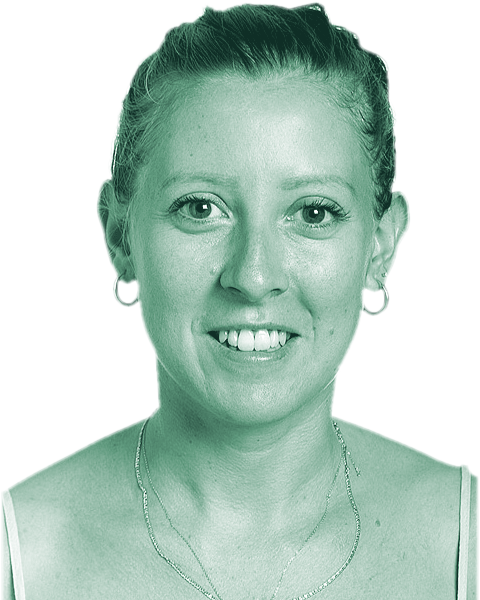

01 / Narrativa↗
Historias con impacto
Storytelling, testimonios y contenidos editoriales que acercan proyectos de cooperación y salud global a diferentes públicos.
Ver materiales ↗Soy Esther Hernández Díaz, especialista en comunicación estratégica para la cooperación internacional, la salud global y la acción humanitaria. Transformo información y experiencias en contenidos claros, visuales y relevantes para distintas audiencias.

ESTRATEGIA · STORYTELLING · CAMPAÑAS · VÍDEO · DISEÑO · DATOS · ALIANZAS
Una muestra de los formatos y líneas de trabajo de mi trayectoria. Consulta la carpeta de proyectos para ver los materiales originales.
Storytelling, testimonios y contenidos editoriales que acercan proyectos de cooperación y salud global a diferentes públicos.
Ver materiales ↗Contenidos para web, newsletters y redes sociales, campañas de sensibilización y comunicación para organizaciones sociales.
Ver materiales ↗Creación y edición de piezas audiovisuales, recursos gráficos e infografías para explicar ideas complejas de forma accesible.
Ver materiales ↗Materiales estratégicos para la movilización de voluntariado y donantes: mensajes, presentaciones y contenidos orientados a generar alianzas.
Ver materiales ↗Presentación institucional de ONU Mujeres para empresas: propuesta de valor, datos de impacto y formas de colaboración para construir alianzas por la igualdad de género.
Ver materiales ↗Folleto de ONU Mujeres para la movilización de recursos: casos de éxito en América Latina y el Caribe y propuestas de financiación para una transición climática justa.
Ver materiales ↗Combino estrategia, creatividad y sensibilidad editorial para dar visibilidad a iniciativas de cooperación internacional. Mi experiencia abarca comunicación institucional, salud global, género, desarrollo y acción humanitaria, trabajando con equipos y socios en contextos multiculturales.
Me interesa convertir datos, conocimiento y experiencias sobre el terreno en mensajes útiles: contenidos que informen, movilicen y construyan confianza.
Experiencia en ONG, organizaciones internacionales, medios y creación de contenidos digitales.
ONU Mujeres · Oficina Regional para América Latina y el Caribe
Comunicación estratégica para visibilidad de donantes y alianzas; materiales de fundraising y coordinación de iniciativas de financiación.
Medicus Mundi · Madrid
Comunicación interna y externa de proyectos de salud internacional; web, blog, medios, redes, eventos, campañas, storytelling, infografías y vídeo.
Service Civil International · Amberes
Contenidos para newsletters, web, redes, campañas y publicaciones; coordinación de celebraciones del centenario y relación con instituciones europeas.
Doctors of the World · Oficina de Centroamérica
Diseño y lanzamiento de estrategia regional de comunicación y gestión del conocimiento para visibilizar proyectos de cooperación sanitaria.
Médicos Sin Fronteras · Madrid
Recopilación de testimonios y material visual, redacción y traducción de artículos, newsletters internas y relación con medios.
Telefónica Educación Digital · Madrid
Creación de contenidos digitales para proyectos de impacto social: diseño, ilustración, vídeo y fotografía.
Agencia EFE · Madrid
Redacción de noticias, cobertura periodística, edición de vídeo y documentación fotográfica.
Para colaboraciones, proyectos de comunicación o para conocer más sobre mi trabajo, puedes escribirme o conectar conmigo en LinkedIn.